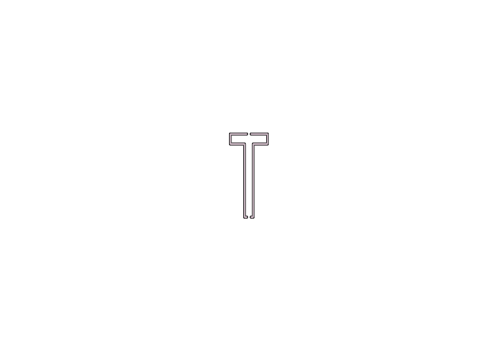
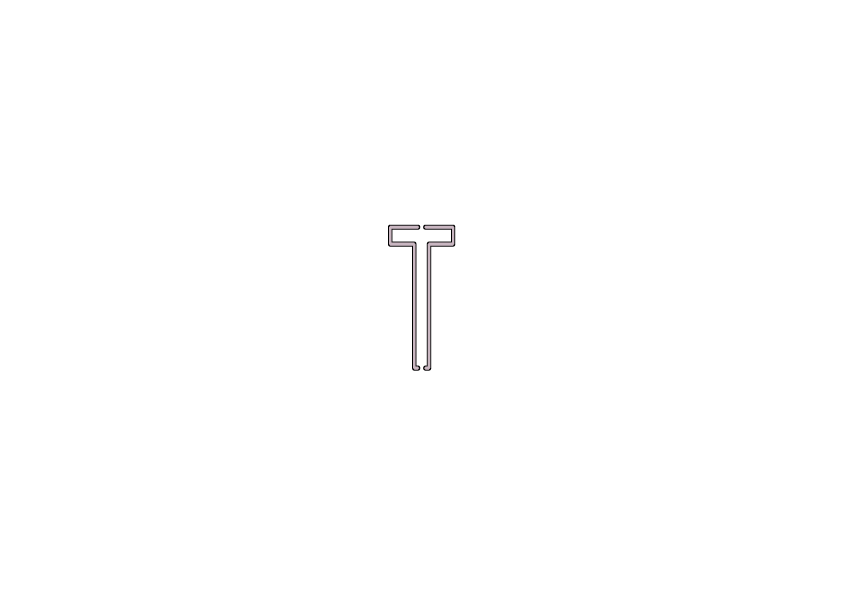

DO YOU WANT TO VOLUNTEER AT HUSET-KBH? General Information At Huset-KBH we present an abundance of diverse events every year, and there are a lot of great ways you can contribute to our welcoming volunteering team. Our team consists of more than 100 Danish and international volunteers. You can work on the following stages: Stardust, Musikcaféen, and STAGE. Your tasks will primarily revolve around maintaining the bar, facilitating events, helping the audience and much more. You will get an extensive look behind the scenes of Denmark’s oldest culture house. Additionally, volunteering means that you are not only doing something fun, but you are a part of the Huset family! WHAT WE HAVE TO OFFER… As a volunteer in Huset you can: Make new friends and a big network. A unique and diverse workplace Have drink tickets for every shift and advantageous prices whenever you’re visiting Huset Have a Huset membership card which allows you to get discount on several cafés and restaurant in the area surrounding Huset-KBH Have the possibility to attend events that are not sold out for free in Musikcaféen, STAGE in Huset and at our neighbors: Spillestedet Stengade, RUST, Beta and Loppen Be invited to Huset’s annual summer party, Christmas party and a bunch of other Huset related events Have the possibility to engage in other voluntary projects in Huset fx. booking concerts, planning festivals, and possible co-creative ideas. To find out more click here. WHAT WE EXPECT FROM YOU… As a volunteer behind the bar at Huset you will: Gain experience with bartending, customer handling, ticket sales, and ticket inspection. Take at least 2 shifts a month – You choose the shifts yourself in our volunteer schedule. Be committed, responsible, independent, service-minded and helpful Show up to your shifts and if you’re unable to take the shift, we expect you to swap with another volunteer in a timely manner. INTERESTED? Write us an e-mail containing contact information and your interest: frivillig@huset-kbh.dk.


 
